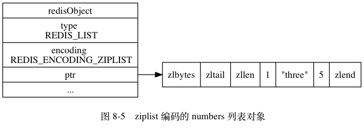
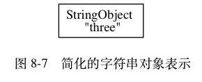
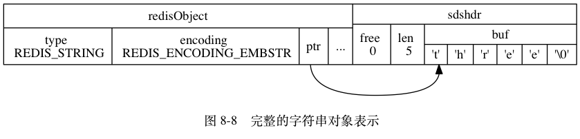

列表对象¶
列表对象的编码可以是 ziplist 或者 linkedlist 。
ziplist 编码的列表对象使用压缩列表作为底层实现，
每个压缩列表节点（entry）保存了一个列表元素。
举个例子，
如果我们执行以下 RPUSH 命令，
那么服务器将创建一个列表对象作为 numbers 键的值：
redis> RPUSH numbers 1 "three" 5
(integer) 3
如果 numbers 键的值对象使用的是 ziplist 编码，
这个这个值对象将会是图 8-5 所展示的样子。

另一方面，
linkedlist 编码的列表对象使用双端链表作为底层实现，
每个双端链表节点（node）都保存了一个字符串对象，
而每个字符串对象都保存了一个列表元素。
举个例子，
如果前面所说的 numbers 键创建的列表对象使用的不是 ziplist 编码，
而是 linkedlist 编码，
那么 numbers 键的值对象将是图 8-6 所示的样子。
![digraph {
label = "\n 图 8-6 linkedlist 编码的 numbers 列表对象";
rankdir = LR;
node [shape = record];
redisObject [label = " redisObject | type \n REDIS_LIST | encoding \n REDIS_ENCODING_LINKEDLIST | <ptr> ptr | ... "];
subgraph cluster_linked_list {
label = "链表";
style = dashed;
node1 [label = "StringObject \n 1 "];
node2 [label = "StringObject \n \"three\""];
node3 [label = "StringObject \n 5 "];
node1 -> node2 -> node3;
}
redisObject:ptr -> node1;
}](../../_images/graphviz-84c0d231f30c740a431407c7aaf3851b96399590.png)
注意，
linkedlist 编码的列表对象在底层的双端链表结构中包含了多个字符串对象，
这种嵌套字符串对象的行为在稍后介绍的哈希对象、集合对象和有序集合对象中都会出现，
字符串对象是 Redis 五种类型的对象中唯一一种会被其他四种类型对象嵌套的对象。
注意
为了简化字符串对象的表示，
我们在图 8-6 使用了一个带有 StringObject 字样的格子来表示一个字符串对象，
而 StringObject 字样下面的是字符串对象所保存的值。
比如说，
图 8-7 代表的就是一个包含了字符串值 "three" 的字符串对象，
它是 8-8 的简化表示。


本书接下来的内容将继续沿用这一简化表示。
编码转换¶
当列表对象可以同时满足以下两个条件时，
列表对象使用 ziplist 编码：
- 列表对象保存的所有字符串元素的长度都小于
64字节； - 列表对象保存的元素数量小于
512个；
不能满足这两个条件的列表对象需要使用 linkedlist 编码。
注意
以上两个条件的上限值是可以修改的，
具体请看配置文件中关于 list-max-ziplist-value 选项和 list-max-ziplist-entries 选项的说明。
对于使用 ziplist 编码的列表对象来说，
当使用 ziplist 编码所需的两个条件的任意一个不能被满足时，
对象的编码转换操作就会被执行：
原本保存在压缩列表里的所有列表元素都会被转移并保存到双端链表里面，
对象的编码也会从 ziplist 变为 linkedlist 。
以下代码展示了列表对象因为保存了长度太大的元素而进行编码转换的情况：
# 所有元素的长度都小于 64 字节
redis> RPUSH blah "hello" "world" "again"
(integer) 3
redis> OBJECT ENCODING blah
"ziplist"
# 将一个 65 字节长的元素推入列表对象中
redis> RPUSH blah "wwwwwwwwwwwwwwwwwwwwwwwwwwwwwwwwwwwww"
(integer) 4
# 编码已改变
redis> OBJECT ENCODING blah
"linkedlist"
除此之外， 以下代码展示了列表对象因为保存的元素数量过多而进行编码转换的情况：
# 列表对象包含 512 个元素
redis> EVAL "for i=1,512 do redis.call('RPUSH', KEYS[1], i) end" 1 "integers"
(nil)
redis> LLEN integers
(integer) 512
redis> OBJECT ENCODING integers
"ziplist"
# 再向列表对象推入一个新元素，使得对象保存的元素数量达到 513 个
redis> RPUSH integers 513
(integer) 513
# 编码已改变
redis> OBJECT ENCODING integers
"linkedlist"
列表命令的实现¶
因为列表键的值为列表对象， 所以用于列表键的所有命令都是针对列表对象来构建的， 表 8-8 列出了其中一部分列表键命令， 以及这些命令在不同编码的列表对象下的实现方法。
表 8-8 列表命令的实现
| 命令 | ziplist 编码的实现方法 |
linkedlist 编码的实现方法 |
|---|---|---|
| LPUSH | 调用 ziplistPush 函数，
将新元素推入到压缩列表的表头。 |
调用 listAddNodeHead 函数，
将新元素推入到双端链表的表头。 |
| RPUSH | 调用 ziplistPush 函数，
将新元素推入到压缩列表的表尾。 |
调用 listAddNodeTail 函数，
将新元素推入到双端链表的表尾。 |
| LPOP | 调用 ziplistIndex 函数定位压缩列表的表头节点，
在向用户返回节点所保存的元素之后，
调用 ziplistDelete 函数删除表头节点。 |
调用 listFirst 函数定位双端链表的表头节点，
在向用户返回节点所保存的元素之后，
调用 listDelNode 函数删除表头节点。 |
| RPOP | 调用 ziplistIndex 函数定位压缩列表的表尾节点，
在向用户返回节点所保存的元素之后，
调用 ziplistDelete 函数删除表尾节点。 |
调用 listLast 函数定位双端链表的表尾节点，
在向用户返回节点所保存的元素之后，
调用 listDelNode 函数删除表尾节点。 |
| LINDEX | 调用 ziplistIndex 函数定位压缩列表中的指定节点，
然后返回节点所保存的元素。 |
调用 listIndex 函数定位双端链表中的指定节点，
然后返回节点所保存的元素。 |
| LLEN | 调用 ziplistLen 函数返回压缩列表的长度。 |
调用 listLength 函数返回双端链表的长度。 |
| LINSERT | 插入新节点到压缩列表的表头或者表尾时，
使用 ziplistPush 函数；
插入新节点到压缩列表的其他位置时，
使用 ziplistInsert 函数。 |
调用 listInsertNode 函数，
将新节点插入到双端链表的指定位置。 |
| LREM | 遍历压缩列表节点，
并调用 ziplistDelete 函数删除包含了给定元素的节点。 |
遍历双端链表节点，
并调用 listDelNode 函数删除包含了给定元素的节点。 |
| LTRIM | 调用 ziplistDeleteRange 函数，
删除压缩列表中所有不在指定索引范围内的节点。 |
遍历双端链表节点，
并调用 listDelNode 函数删除链表中所有不在指定索引范围内的节点。 |
| LSET | 调用 ziplistDelete 函数，
先删除压缩列表指定索引上的现有节点，
然后调用 ziplistInsert 函数，
将一个包含给定元素的新节点插入到相同索引上面。 |
调用 listIndex 函数，
定位到双端链表指定索引上的节点，
然后通过赋值操作更新节点的值。 |